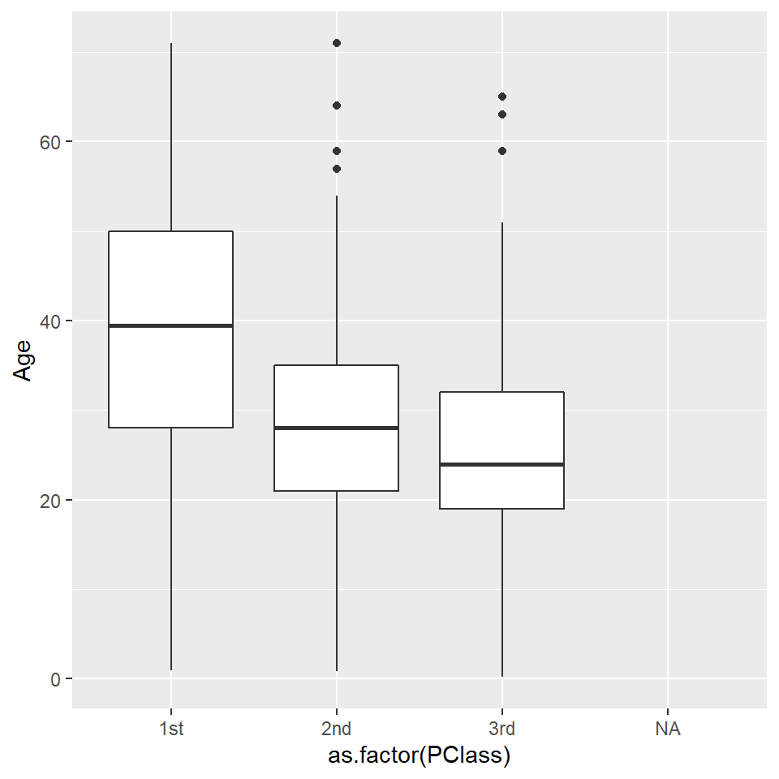

Lab1 Getting started with R & RStudio
- Successfully install R and RStudio
- Install tidyverse and brms
- Try out some base R code
- Play with data frame and produce some summary statistics
- Learn about Rmarkdown with live demo by Juan Pablo
1.5 R and RStudio Installation
R is a language and environment for statistical computing and graphics (https://cran.r-project.org/manuals.html). Many users of R like a tool called RStudio (https://www.rstudio.com/). This software is what is called an Integrated Development Environment (IDE) for R. It has several nice features, including docked windows for your console and syntax-highlighting editor that supports direct code execution, as well as tools for plotting and workspace management.
1.5.1 Windows operating system
1.5.2 macOS operating system
- install R, https://cran.r-project.org/bin/macosx/
- install RStudio, https://www.rstudio.com/products/rstudio/download/#download (select macOS 10.14+ option)
- YouTube Instruction
1.6 R Packages
Packages are the fundamental units of reproducible R code. They include reusable R functions, the documentation that describes how to use them, and sample data.(Wickham 2015)
To load the functions in a given package, we first have to install the package. We do this using the install.packages() function. Run the line of code that installs the tidyverse package below by removing the # at the start of the second line to ‘uncomment’ the code. R will install the package to a default directory on your computer. If any dialogue box prompts you to ‘set up a personal library instead,’ click yes. Once we have the package installed, we must load the functions from this library so we can use them within R.
# install.packages(“tidyverse”, dependencies = T) #uncomment this line if you haven't installed this package;
library(tidyverse) # load package libraryThe tidyverse is an opinionated collection of R packages designed for data science. All packages share an underlying design philosophy, grammar, and data structures (https://www.tidyverse.org/). The core packages are ggplot2 (data visualization), dplyr(dataframe manipulation), tidyr(data reshaping), readr(reading datasets), purrr (function and iterations) and tibble(dataframe).
1.6.1 Bayesian Analysis in R using brms package
The course will mainly use the brms package in R(Bürkner 2017), which offers a standard R-modelling type interface to the underlying computing engine Stan. Direct use of Stan is not ideal for teaching Bayesian methods. The brms package automatically writes Stan code that can be viewed and edited, so after learning brms, the enterprising student may want to use this Stan code as a steppingstone toward programming directly in Stan. The brms package can be installed and loaded in the same way as any other R package, in this case by typing the following commands in R:
#uncomment this line if you haven't installed this package;
# install.packages(“brms”)
library(brms)1.7 Working in RStudio
1.7.1 RStudio layout
When you open RStudio, your interface is made up of four panes as shown below. These can be organised via menu options View > Panes >

RStudio layout
We can run code in the console at the prompt where R will evaluate it and print the results. However, the best practice is to write your code in a new script file so it can be saved, edited, and reproduced. To open a new script, we select File > New File > R Script.
To run code that was written in the script file, you can highlight the code lines you wish be evaluated and press CTRL-Enter (windows) or Cmd+Return (Mac). Additionally, You can comment or uncomment script lines by pressing Ctrl+Shift+C (windows) or Cmd+Shift+C (Mac). The comment operator in R is #. You can find more RStuio default keyboard shortcuts here.
In our first tutorial, we will also introduce Rmarkdown, a R version of the markdown file editor that can write and output document in html, word, or pdf format that contents not only the programming code but also any evaluation outputs and graphs. To read more about Rmarkdown, please visit https://rmarkdown.rstudio.com/lesson-1.html.
1.7.2 Customization
You can customize your RStudio session under the Options dialog Tools > Global Options menu (or RStudio > Preferences on a Mac). A list of customization categories can be found here, https://support.rstudio.com/hc/en-us/articles/200549016-Customizing-RStudio. For example, it’s popular to change RStudio appearance and themes (e.g., mordern, sky, dark, and classic).
1.7.3 Working directory
The working directory is the default location where R will look for files you want to load and where it will put any files you save. You can use function getwd() to display your current working directory and use function setwd() to set your workding directory to a new folder on your computer. One of the great things about using RStudio Projects is that when you open a project it will automatically set your working directory to the appropriate location.
getwd() #show my current working directory;## [1] "D:/GitHub/bayes_bookdown"1.7.4 Getting help with R
The help section of R is extremely useful if you need more information about the packages and functions that you are currently loaded. You can initiate R help using the help function help() or ?, the help operator.
help(brms)1.8 Basic R (a crash introduction)
A more comprehensive introduction to base R can be found at https://cran.r-project.org/doc/manuals/r-release/R-intro.html. In this subsection, I will briefly outline some common R functions and commands for arithmetic, creating and working with object, vector, matrix, and data.
This short introduction is created using the intro to R workshop notes by Prof. Kevin Thorpe as well as multiple open-source materials.
Some important notes
R is case sensitive.
Commands are separated by a newline in the console.
The # character can be used to make comments. R doesn’t execute the rest of the line after the # symbol - it ignores it.
Previous session commands can be accessed via the up and down arrow keys on the keyboard.
When naming in R, avoid using spaces and special characters (i.e., !@#$%^&*()_+=;:’“<>?/) and avoid leading names with numbers.
1.8.1 Arithmetic
2*3
2^3
2 + (2 + 3) * 2 - 5
log(3)
exp(3)
log(exp(1)) #playing with Euler's number;
sqrt(x)
#Logical operators;
5>6
5<=6
5==6 #equal;
6==6
5!=6 #not equal;Rounding Issues in R
Try evaluating log(0.01^200) and 200*log(0.01) in R. Note that they are mathematically equivalent.
log(0.01^200)## [1] -Inf200*log(0.01)## [1] -921.0341.8.2 Vectors
Operator <- is called the assignment operation, we can create a vector (numeric, characteristic, or mixture) using the assignment operation and the c() function.
# a vector of a single element;
x <- 3
x
# a character vector
x <- c("red", "green", "yellow")
x
length(x)
nchar(x) #number of characters for each element;
# encode a vector as a factor (or category);
y <- factor(c("red", "green", "yellow", "red", "red", "green"))
y
class(y)
as.numeric(y) # we can return factors with numeric labels;
# we can also label numeric vector with factor levels;
z <- factor(c(1,2,3,1,1,2), levels = c(1,2,3), labels = c("red", "green","yellow"))
z
class(z)
mode(z)
#we can use this to create dummy variables for regression;
contrasts(z)
# a numeric vector;
x <- c(10.4, 5.6, 3.1, 6.4, 21.7, 53.5, 3.6, 2.6, 6.1, 1.7)
x
x[2]
x[1:3]
x[-1]
x[-(1:3)]
length(x) #return number of elements;
# a numeric vector composed of all integers between 1 and 10;
y <- 1:10
y
# a numeric vector composed of all even number integers between 0 and 10;
z <- seq(0,10, by=2)
z
# simple vector based calculations;
x + y
x*y
x/y
# matrix in R;
matrix(1:16, nrow=4)
matrix(1:16, nrow=4, byrow=TRUE)
matrix(1:16, nrow=4)
diag(matrix(1:16, nrow=4))
diag(c(1,-3,7))
diag(3)
# matrix calculation;
X <- matrix(1:16, nrow=4, byrow=T)
X
t(X) #transpose;
Y <- matrix(seq(1,32, by=2), nrow=4, byrow=T)
Y
Y + X
Y - X
3 * X
X * Y
X %*% Y #inner product;1.8.3 Data frame - The Titanic dataset
Titanic <- read.csv('data/Titanic.csv', header = TRUE, na.strings = "NA")
knitr::kable(rbind(head(Titanic), tail(Titanic)), row.names = FALSE)| Id | Name | PClass | Age | Sex | Survived | SexCode |
|---|---|---|---|---|---|---|
| 1 | Allen, Miss Elisabeth Walton | 1st | 29.00 | female | 1 | 1 |
| 2 | Allison, Miss Helen Loraine | 1st | 2.00 | female | 0 | 1 |
| 3 | Allison, Mr Hudson Joshua Creighton | 1st | 30.00 | male | 0 | 0 |
| 4 | Allison, Mrs Hudson JC (Bessie Waldo Daniels) | 1st | 25.00 | female | 0 | 1 |
| 5 | Allison, Master Hudson Trevor | 1st | 0.92 | male | 1 | 0 |
| 6 | Anderson, Mr Harry | 1st | 47.00 | male | 1 | 0 |
| 1308 | Zabour, Miss Tamini | 3rd | NA | female | 0 | 1 |
| 1309 | Zakarian, Mr Artun | 3rd | 27.00 | male | 0 | 0 |
| 1310 | Zakarian, Mr Maprieder | 3rd | 26.00 | male | 0 | 0 |
| 1311 | Zenni, Mr Philip | 3rd | 22.00 | male | 0 | 0 |
| 1312 | Lievens, Mr Rene | 3rd | 24.00 | male | 0 | 0 |
| 1313 | Zimmerman, Leo | 3rd | 29.00 | male | 0 | 0 |
Reading data
- create a local folder, HAD5314H_Bayesian_2022, in your PC where you will store the Titan.csv file downloaded from Quercus
- set your working directory to this folder
- import the csv data to your session
dim(Titanic)
str(Titanic)
names(Titanic)
Titanic$Age
Titanic[,c("Age")]
Titanic[2:3, 2:3]
# some quick dplyr data manipulation;
Titanic %>%
filter(PClass == "1st") %>% # filter on 1st class; passengers;
select(Id, Name, Age, Sex, Survived) # select these; columns only;
# looking at the distinct values;
Titanic %>%
distinct(PClass)
table(Titanic$PClass, useNA = "always")
# counting missing values;
Titanic %>%
summarise(count = sum(is.na(PClass)))
# quick summary;
mean(Titanic$Age)
sum(is.na(Titanic$Age)) # counting missing values;
mean(Titanic$Age, na.rm = TRUE)
median(Titanic$Age, na.rm = TRUE)
quantile(Titanic$Age, probs =c(0.25,0.75), na.rm = TRUE)
Titanic %>%
summarise(mean = mean(Age, na.rm = TRUE),
na = sum(is.na(Age)),
med = median(Age, na.rm = TRUE))
# summary by group;
Titanic %>%
group_by(PClass) %>%
summarise(mean = mean(Age, na.rm = TRUE),
na = sum(is.na(Age)),
med = median(Age, na.rm = TRUE)) Summarize age by survival status
Using the example code above, please calculate the mean and median age by survival status. Can you figure out how to get IQR with the pipe operator %>% in dlypr?
1.8.4 Simple plots
boxplot(Age~PClass, data=Titanic)p <- ggplot(Titanic, aes(x=as.factor(PClass), y=Age)) +
geom_boxplot()
p
ggplot(Titanic, aes(x=as.factor(PClass), y=Age, fill = as.factor(PClass))) +
geom_boxplot() +
geom_jitter(shape=16, position=position_jitter(0.2)) +
labs(title="Plot of age by passenger class",x="Passenger Class", y = "Age", fill = "Passenger Class")+
theme_classic()
Plot age distribution by survival status Using the example code above, please generate a boxplot of age by survival status.
R Session information
## R version 4.0.5 (2021-03-31)
## Platform: x86_64-w64-mingw32/x64 (64-bit)
## Running under: Windows 10 x64 (build 19044)
##
## Matrix products:
##
## locale:
## [1] LC_COLLATE=English_Canada.1252 LC_CTYPE=English_Canada.1252
## [3] LC_MONETARY=English_Canada.1252 LC_NUMERIC=C
## [5] LC_TIME=English_Canada.1252
##
## attached base packages:
## [1] stats graphics grDevices utils datasets methods base
##
## other attached packages:
## [1] brms_2.16.3 Rcpp_1.0.7 forcats_0.5.1 stringr_1.4.0
## [5] dplyr_1.0.8 purrr_0.3.4 readr_2.1.2 tidyr_1.2.0
## [9] tibble_3.1.6 ggplot2_3.3.5 tidyverse_1.3.1